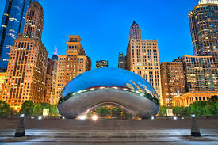

Choses à découvrir à Chicago
- Millennium Park – Parc emblématique abritant la célèbre sculpture Cloud Gate ("The Bean").
- Willis Tower Skydeck – Vue spectaculaire depuis l’un des plus hauts gratte-ciel des États-Unis.
- Navy Pier – Quai animé avec attractions, restaurants et grande roue.
- Magnificent Mile – Avenue prestigieuse idéale pour le shopping et l’architecture.
- Art Institute of Chicago – Musée d’art de renommée mondiale.
- Chicago Riverwalk – Promenade agréable le long de la rivière Chicago.
- Architecture River Cruise – Croisière guidée pour admirer les célèbres gratte-ciel.
- Grant Park – Grand parc urbain accueillant festivals et événements.
- Shedd Aquarium – Aquarium impressionnant avec espèces du monde entier.
- Field Museum – Musée d’histoire naturelle abritant le célèbre squelette de T-Rex "Sue".
- Lincoln Park Zoo – Zoo gratuit situé près du lac.
- Wrigley Field – Stade historique des Chicago Cubs.
- 360 Chicago Observation Deck – Plateforme d’observation avec vue panoramique sur le lac Michigan.
- Quartier de Hyde Park – Quartier culturel abritant l’Université de Chicago.
- Deep-Dish Pizza – Goûtez la célèbre pizza épaisse typique de Chicago.